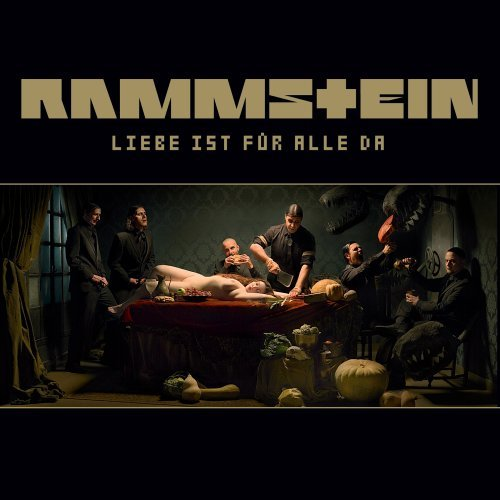
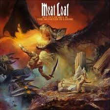

Datos Generales
- Nombre completo: Juan José Santos Burgos
- Fecha de Nacimiento: 06 de Diciembre de 1991
- Dirección: Jr. San Camilo D-9
- Teléfono: 940434643
Estudios
- Centro educativo Secundaria: I.E.P Ramón Castilla
- Universidad: Universidad Nacional de Cajamarca
Intereces
* Música
| Nombre | --Audio-- | Portada |
| Rammstein - Liebe ist fur alle da |  | |
| Celia Cruz - Te busco | ||
| Meat Loaf - Alive |  | |
| Queensryche - Silent Lucidity |
*Películas
| Nombre | Sinópsis | Portada |
| Green Book |
Un pianista negro contrata a un rudo italoamericano para que sea su chofer y guardaespaldas |

|